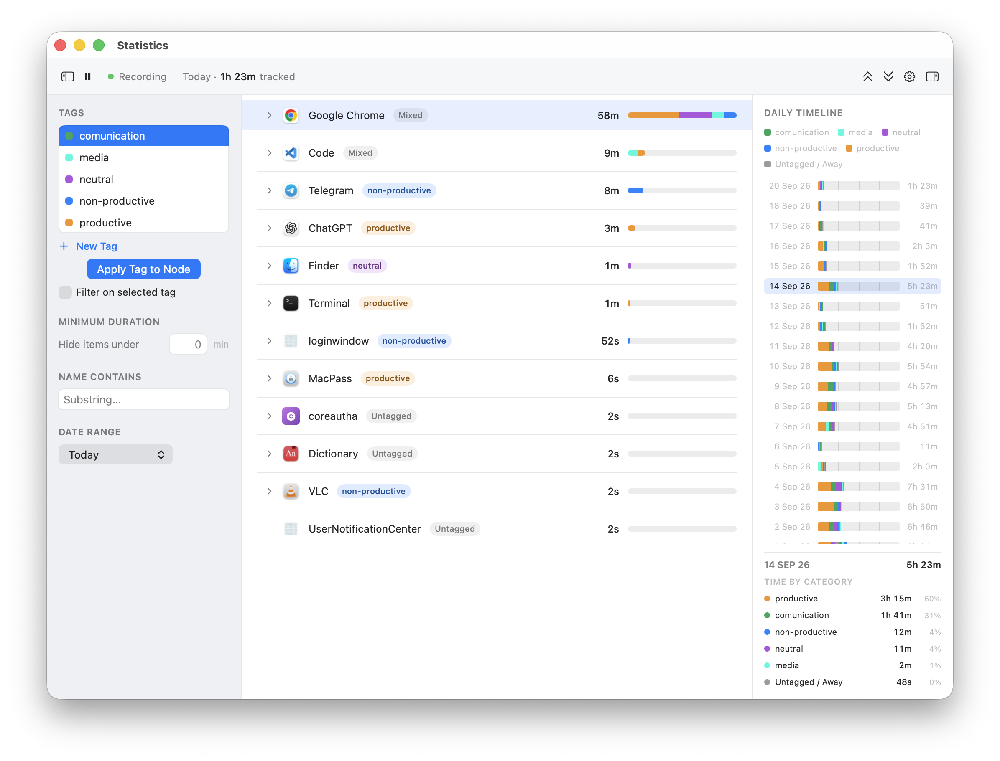

Menu Bar Time Tracking for macOS
Applog watches every app, tab, and document you touch — automatically, in your menu bar — and stores it all in a local file only you can see. No timers. No cloud. No "are you still there?" popups.
Free to try. Requires macOS. Your data never leaves your device.

default sampling interval — no manual timer to start or forget
bytes of tracked data ever leave your Mac
average CPU while idle-sampling in the background
tabs, documents, and windows tracked per app — no allow-list
Applog doesn't.
"Start the timer" — then forget to.
Manual timers only work if you remember to click them. Applog samples the frontmost app automatically, every 5 seconds, so nothing depends on your memory.
Automatic sampling
"Chrome: 4h 12m" tells you nothing.
Most trackers lump every browser tab into one app-level entry. Applog builds a real hierarchy — browser, domain, and exact page title — and does the same for terminals, editors, and chat apps.
Per-tab / per-document detail
"Are you still there?" — no.
Idle-nag dialogs interrupt your flow to ask a question you don't want to answer mid-task. Applog detects idle and away time silently and lets you tag it later, on your own schedule.
Silent idle & away detection
Three steps, and you never think about it again.
Step 1
Grant Accessibility access, once
Applog explains exactly why it needs to read window titles and deep-links you straight to System Settings. No Input Monitoring permission required — idle detection never reads keystroke content.
Step 2
Work normally
Every 5 seconds, Applog notes the frontmost app and window. Idle and away time are detected silently and dropped into a dedicated "Away" node you can categorize whenever you like.
Step 3
Review and tag
Open Statistics from the menu bar any time. Drill into the tree, apply color-coded tags to any app, domain, or page for billing and reporting, and see your daily rhythm at a glance.
Grant Accessibility access, once
Applog explains exactly why it needs to read window titles and deep-links you straight to System Settings. No Input Monitoring permission required.
Work normally
Every 5 seconds, Applog notes the frontmost app and window. Idle and away time are detected silently and dropped into a dedicated "Away" node.
Review and tag
Open Statistics from the menu bar any time. Drill into the tree, apply color-coded tags, and see your daily rhythm at a glance.
Every feature maps to a real tracking gap other tools leave open.
Per-tab, per-document tracking
No fixed app list. Every distinct tab, note, channel, or file you look at earns its own row in the tree — automatically, across any app.
Smart browser hierarchy
Safari, Chrome, Firefox, Arc, and Edge get a dedicated Browser → Domain → Page hierarchy, read via the Accessibility API — not guessed from window titles.
Tag anything
Color-coded project tags apply to any node — app, domain, or page — and cascade down the tree with per-node overrides where you need them.
Daily rhythm timeline
A 24-hour strip per day, colored by tag, stacked across your whole history — so patterns and idle stretches are visible at a glance.
Manual correction & merging
Missed time because an app quit mid-session? Adjust minutes by hand, merge duplicate nodes, or merge in a database from another Mac.
Export everywhere
HTML reports for sharing, CSV/JSON for spreadsheets, or a raw database export for merging into another Applog install.
Applog stores everything in a single SQLite file under your own Library folder. There's no server to send data to, because there's no server at all.
You can open "Show Database in Finder" at any time and inspect the raw file yourself. Nothing is hidden from you, and nothing leaves your Mac.
Accessibility, not Input Monitoring
Applog reads window titles via the Accessibility API to build the tracking tree. Idle detection uses system-wide input timestamps only — never keystroke content — so Input Monitoring permission isn't required.
Click and keypress counts only
Applog counts keyboard presses and mouse clicks for engagement-intensity display. What you actually type is never captured, stored, or transmitted.
Exclusion list built in
Add any app or browser domain to an exclusion list in Settings — excluded items are never sampled or stored, full stop.
The categories that actually differ between trackers.
| Applog | RescueTime | Timing | ActivityWatch | |
|---|---|---|---|---|
| Data leaves device | Never | Yes, cloud-synced | Optional cloud | Never |
| Per-tab / per-doc tracking | Automatic, any app | Limited | Manual rules | Watcher plugins |
| Idle handling | Silent, tag later | Popup prompts | Popup prompts | Silent |
| Setup | Menu bar, one permission | Account + agent | Account + agent | Self-hosted watchers |
Free to try. Your data never leaves your Mac.
No signup required to try it.